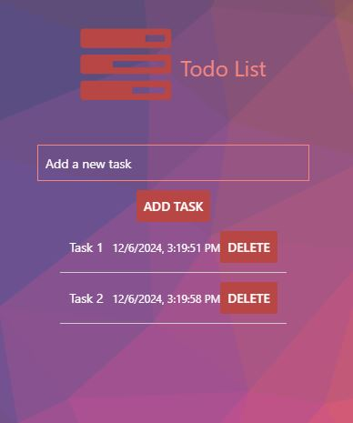

To-Do List

The "To-Do List" application is a simple and efficient task manager designed to help users stay organized. It allows you to add, edit, and delete tasks effortlessly. Featuring a clean and intuitive interface, the application is perfect for tracking daily goals or managing larger projects. Built with a focus on user experience, it includes responsive design for use on desktops, tablets, and smartphones.